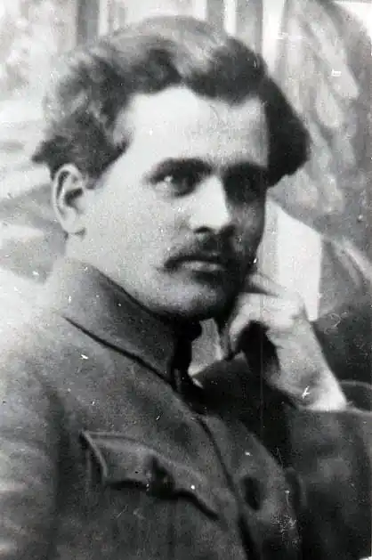
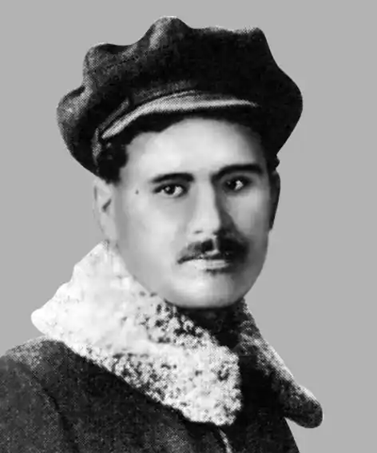

Григорій ЕПІК
ЕПІК Григорій Данилович народився 17 січня 1901 року в селі Кам'янка під Катеринославом у і сім'ї робітника. Закінчив сільську школу. З 1916 року працював у залізничних майстернях конторником на складі. За участь в антигетьманському повстанні був вигнаний з роботи. 1919 року став добровольцем Першого Ново-Московського повстанчого полку, брав участь у революційних подіях.
На початку 1920 року вступив до більшовицької партії і став працювати в ревкомі Кам'янки. Згодом переїхав до Полтави, був інструктором політпросвіти, секретарем та головою повітового виконкому. З 1922 року — в культвідділі окружкому КП(б)У, а потім у губкомі комсомолу, У 1924-1926 роках Г. Епік — головний редактор видавництва "Червоний шлях" та ДВУ в Харкові. Завчався в інституті марксизму-ленінізму. З серпня 1933 року — на творчій роботі. Григорій Епік брав участь у діяльності культурно-просвітницьких товариств, входив до Спілки селянських письменників "Плуг", згодом пристав до групи Хвильового ВАПЛІТЕ. У червні 1934 року під час партійної чистки Епіка виключили з КП(б)У з таким формулюванням: "Протягом довгих років і до останнього часу опирався лінії партії в літературі, підтримував націоналістичні елементи в їхній боротьбі проти партії". Основні творчі здобутки письменника — кілька повістей і романів, що засвідчують його духовну еволюцію. Найпомітніші з них — повість "Восени", де виведено тип комуніста-переродженця, який безкарно владарює у житловому кооперативі, та роман "Без грунту". В ньому письменник гостро таврував пристосуванців — "папероїдів", які виробили системі свого існування: цілковита покора дужчим і нещадне знущання, над слабшими. В романі "Перша весна" (1931) Епік зумів правдиво показати відчайдушний опір селянства насильницькій колективізації. А 1932 року видав прокомсомольський роман "Петро Ромен", де оспівував зростання радянської технічної інтелігенції. Заарештований 5 грудня 1934 року нібито за приналежність до контрреволюційної націоналістичної організації, що планувала терористичні акти проти керівників Компартії та уряду. Виключення з партії, арешт одразу ж після вбивства Кірова духовно надломили письменника. На противагу заарештованим одночасно і ним у Харкові В.Підмогильному, М.Кулішеві, котрі тривалий час відкидали надумані звинувачення, Г.Епік без спротиву визнав свою приналежність до міфічної терористичної організації, до якої нібито входили М.Куліш, В.Поліщук, В.Підмогильний, Є.Плужник, В.Вражливий. На початку 1935 року багатьох письменників вразив лист Епіка на ім'я наркома В.Балицького, в якому письменник розкаювався за злочинні наміри всієї групи і визнавав, що їх усіх варто постріляти, "як скажених псів". Цього листа на пленумі правління Спілки письменників України зачитав секретар ЦК КП(б)У Постишев. Як засвідчують документи, засуджений до 10-річного ув'язнення спільним вироком на 17 осіб, Г.Епік був відправлений для відбування покарання на Соловки. Листи письменника з концтабору до дружини переповнені фальшивим пафосом, довжелезними списками класичної літератури, яку він буцімто читає в години дозвілля, а також розповідями про те, що він натхненно працює над книжкою новел "Соловецкие рассказы", котра, на його думку, "принесла б дуже багато користі й мала б надзвичайний успіх". Рукопис цієї книжки Епік згодом надіслав до Москви на ім'я наркома внутрішніх справ та ще й з проханням ознайомити з нею "ще й старших." Проте ніякі запобігання не полегшили долі письменника. В цьому незабаром переконався й сам Епік. У книжці "Українська інтелігенція на Соловках" С.Підгайний згадує, як бадьорий письменник раптом "перестав бути ударником, спалив новели й роман, писані "во славу Чека", відмовився від роботи, посилаючись на біль у нозі..." У жовтні 1937 року справу Г.Епіка, як і інших українських письменників і митців, несподівано переглянула трійка УНКВС Ленінградської області й винесла новий вирок — розстріл. Вирок був виконаний 3 листопада того ж року. Реабілітований Григорій Епік посмертно, в 1956 році "за відсутністю складу злочину" постановою Військової колегії Верховного суду СРСР ЛУ 31(4440) 1.08.1991